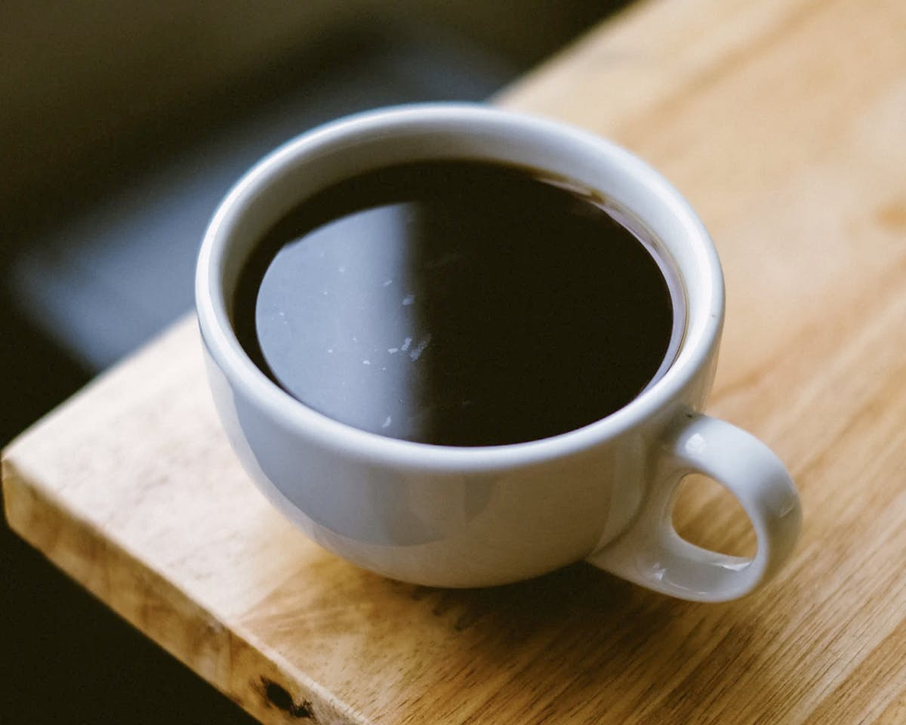

Americano
$4.99
Caffè Americano (also known as Americano) is a type of coffee drink prepared by diluting an espresso with hot water, giving it a similar strength to, but different flavor from, traditionally brewed coffee. However ours we have made very strong... for the brave and the bold only!